Speakers
Vanessa Tanco
President, iAcademy
Vanessa holds a Bachelor's degree in Legal Management from the Ateneo De Manila University and a Masters degree in Business Administration from the University of Southern California. In 2007 she entered in iACADEMY as head of the Marketing department and doubled the enrolment for that year. Since then she has been at the forefront of expanding the college by offering new courses under the School of Design and steered iACADEMY’s partnership with Project Runway Philippines, WACOM and IBM, as well as having the college awarded as an IBM Center of Excellence. She also led the creation of iACADEMY School of Continuing Education. Vanessa is currently the President and CEO of iACADEMY and vows to make iACADEMY the top design and technology school in Asia.
Claude Rodriguez
Cardboard App Hackathon Winner
Elisha Gonzales
Lokalista, DLSU Startup Engineering Course Winner
Joyce Guiao
Less Sugar, DOST-FNRI Unilab Competition Winner
Valenice Balace
CEO and Founder, Peekawoo
Val founded Peekawoo, a dating site created by girls to help girls. It is a social service aiming to make dating fun and interactive both online and offline. Her father is a programmer and she herself is a computer science graduate who has worked in the IT industry all her professional life.
Stef Sy
Partner at Silicon Valley Insight, Xoogler
Stephanie is a Partner at Silicon Valley Insight, where she builds data solutions for companies around the world. She worked on data at Bay Area tech startup Wildfire Interactive and at Google HQ before returning to the Philippines. She graduated from Stanford University in 2011.
Jen Alconis
Chief Science Research Specialist, Project NOAH
Jen is the Chief Science Research Specialist (Chief SRS) under the Web-GIS component of Project NOAH. She has been affiliated with the DOST-led agency since 2012. Her field of expertise include geography, web development, and flood modeling. In her spare time, she collects graphic novels, binges on food trips, and kicks ass in mixed martial arts.
Nellie Margaret Chua
Graduate Student, DLSU
Nellie is currently a graduate student at De La Salle University. In 2010 she graduated Summa Cum Laude on BS Computer Science with specialization in Software Technology. She also got the Jose RIzal Honor's Society and was a Star Scholar.
Aisa Mijeno
CEO, SALT PH
Engr. Aisa Mijeno is currently a faculty member of Engineering at De La Salle University — Lipa. Being a member of Greenpeace Philippines, she has traveled many places promoting environmental campaigns. She also loves hiking which brought her to the majestic mountains of Kalinga where it all began. The product concept was formed after living with the natives of the Butbut tribe for days relying only on kerosene lamps and moonlight to do evening chores. Her interests vary from astronomy to classical music to embedded systems and electrochemistry.
Engr. Roma Mercado
e-Gizmo
Roma is a Licensed Electronics Engineer who graduated from Adamson University in 2011. She is currently a Technical Engineer at e-Gizmo. Some of the PCB Boards she designed are e-Gizmo Heart Rate Monitor Kit, Soil Moisture sensor and MQ-x Gas Sensor kit. She's also a member of the Phil Robotics. She also loves to play table tennis, volleyball, basketball and playing piano during her freetime.
Reina Reyes
Astrophysicist / Data Scientist at Voyager
Reina is data scientist at Smart Communications, Inc. and part-time faculty at the Department of Information Systems and Computer Science in Ateneo de Manila University. She got her Ph.D. in astrophysics from Princeton University in 2011.
Celine Barrozo
Authorized Google for Education Trainer
Celine is an Authorized Google Apps for Education Trainer. She's been teaching GAFE since 2012 and have helped more than 20 universities with their Go Google journey. From a non-tech background, she's enjoying all the learnings in the IT industry. Lastly, she's a frustrated blogger, excited traveler, food explorer, and money collector.
Gail Tan
Head of Communications, Google Philippines
Gail is the head of communications and public affairs at Google Philippines. She has over 15 years of experience in public relations and marketing communications. Before taking on her current role in Google, Gail was a TV producer, scriptwriter and communications strategists for two Philippine presidents. She also worked as the Social Media Manager for one of President Bill Clinton's former security adviser on terrorism. Gail finished her masters degree in Management at Harvard University. She also has a degree in Communication Arts and a masters in Public Management.


 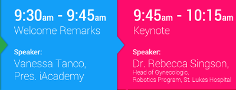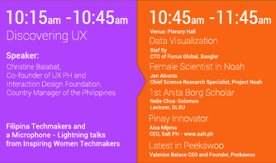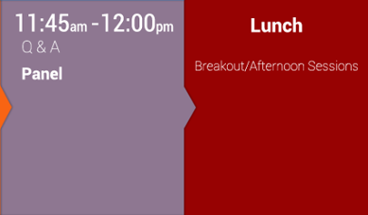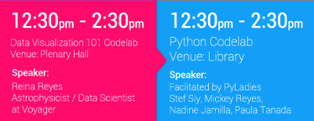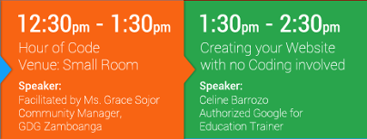
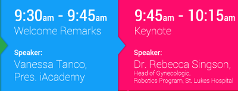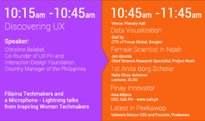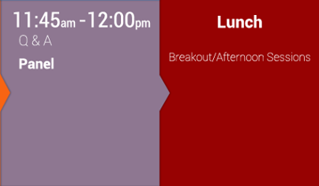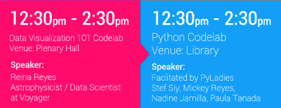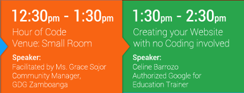 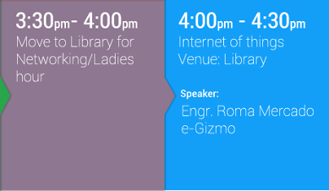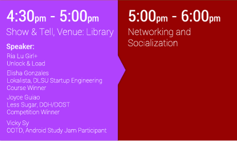
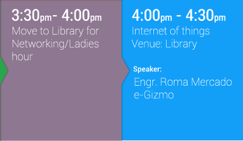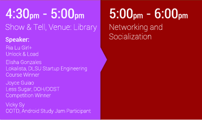